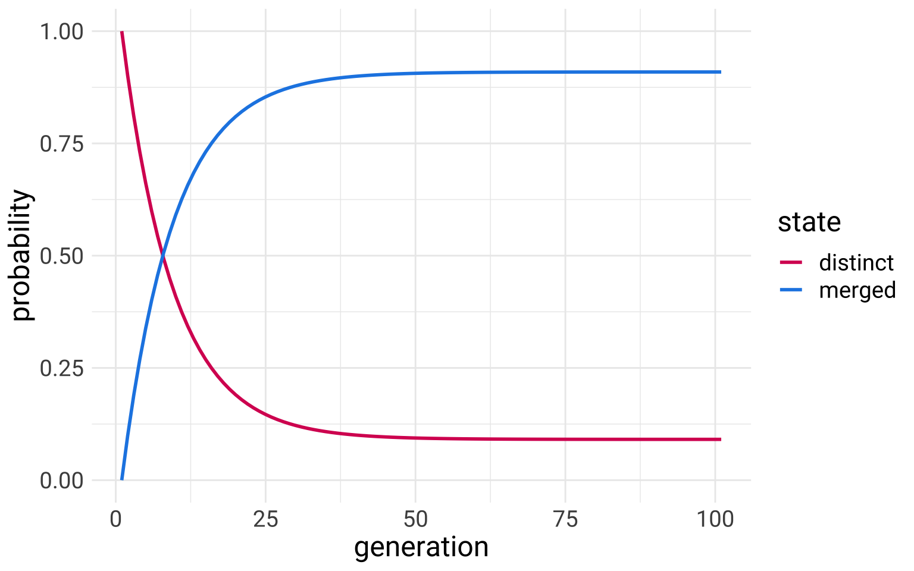

Lin517: Natural Language Processing
Course materials for Fall 2022’s Natural Language Processing Course at University of Kentucky.
| Date | Title | Categories | |
|---|---|---|---|

|
Aug 20, 2022 | Mathematical Notation | |
|
|
Aug 22, 2022 | Reading a Technical Paper | |
|  | Aug 24, 2022 |
What is NLP? (for this course) |
|

|
Aug 31, 2022 | Data Sparsity | |
|
|
Sep 2, 2022 | Starting Python | python |

|
Sep 6, 2022 | Data Processing | |
| Sep 9, 2022 | Lists and Dictionaries | python |
No matching items